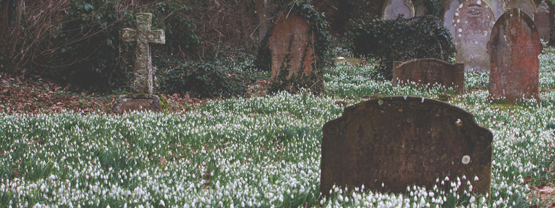
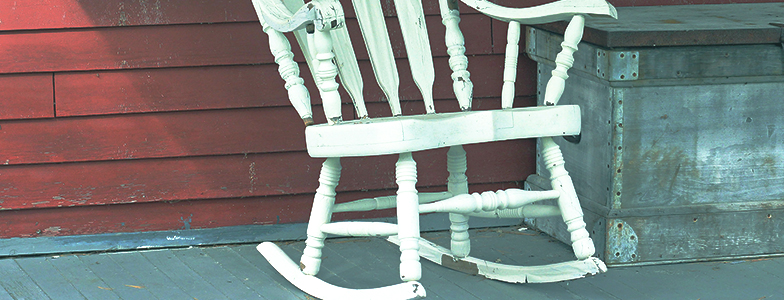
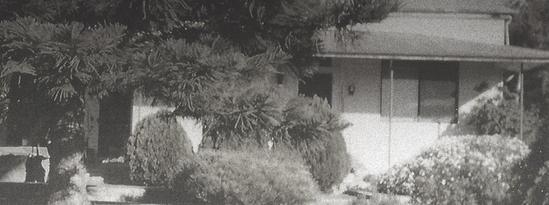
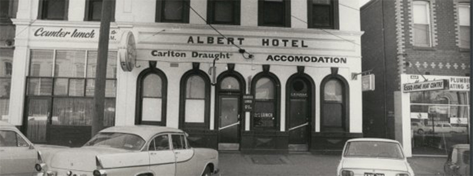
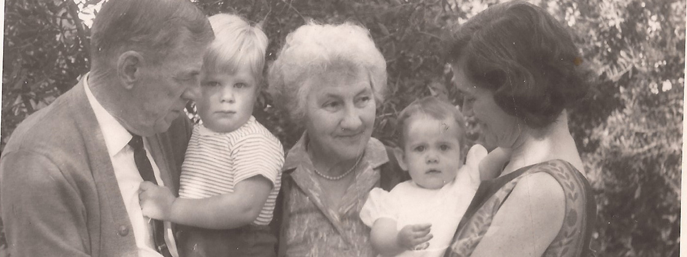
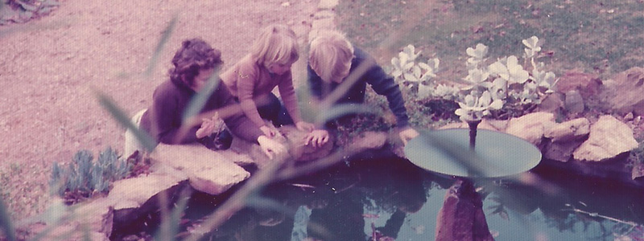
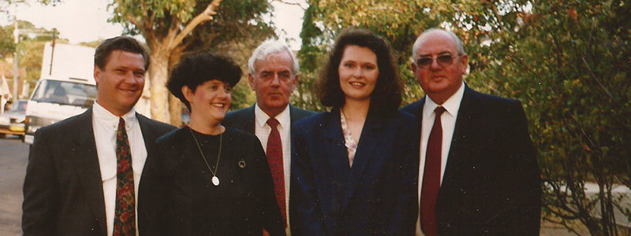

LOVE IN OTHER COUNTRIES IN THE BRITISH EMPIRE
Click the top left corner of each image to hear the next part of the story.
Isle of Wight
The SS Orcades
City to Country
Gary & Sally
Map
Isle of Wight

SS Orcades

City to Country


Gary & Sally


